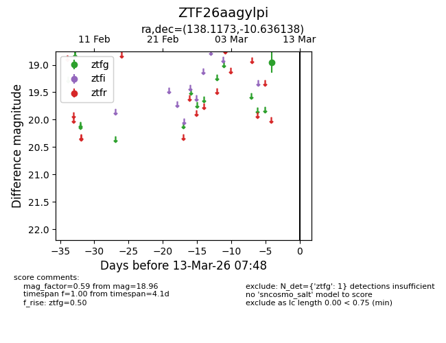
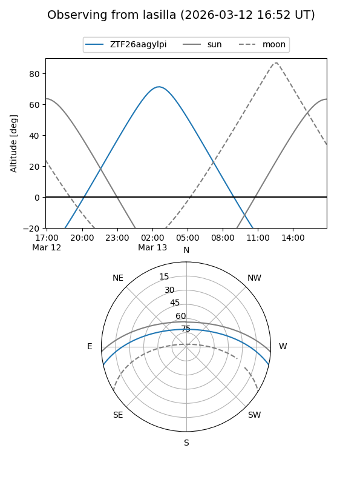
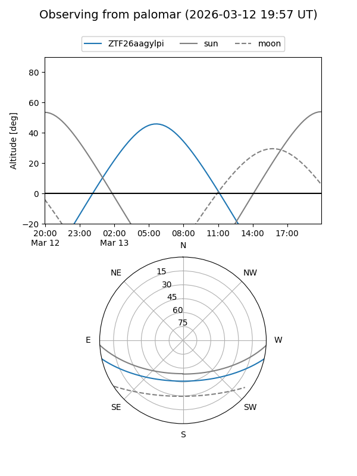

ZTF26aagylpi
Target ZTF26aagylpi at 2026-03-13 07:50
Aliases and brokers:
FINK: link
Lasair: link
ALeRCE: link
alt names
ZTF26aagylpi (ztf,fink_ztf)
Coordinates:
equatorial (ra, dec) = 138.1173,-10.63614
equatorial (HMS+DMS) = 09:12:28.15,-10:38:10.10
galactic (l, b) = (240.7227,+24.88277)
Flags:
Photometry:
last ztfg=18.96
1 ztfg detections
Lightcurve

Visibility


Additional plots